elétrons mania
Guia Descobrindo a Eletrônica
4 estilos
Esse documento é parte integrada do produto
Elétrons Mania kit e não pode ser vendido separadamente.
Bem Vindo
Amigo
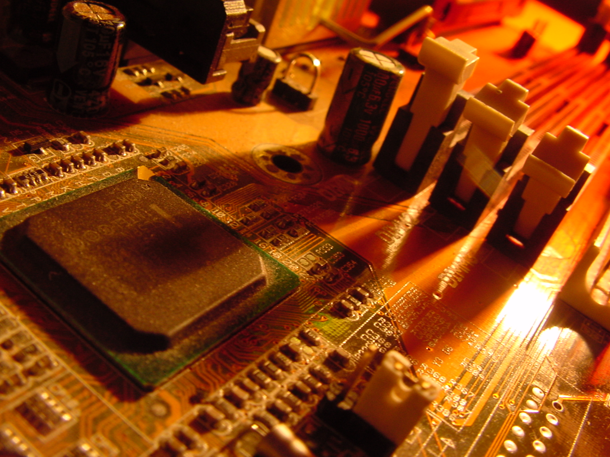
Descobrindo a eletrônica
Seja bem vindo ao mundo da eletrônica!
Vamos percorrer juntos os conhecimentos e bases da eletrônica no mundo atual.
No Elétrons Mania Kit vou mostrar a você coisas que poucas pessoas conhecem e esse guia vai nos ajudar na tarefa.
Esteja preparado para entender o funcionamento da eletricidade e de toda a energia que move o nosso mundo.
Sei que você pode ver que a energia elétrica está por toda a parte, certo? Quando liga uma lâmpada, joga videogame ou abre a geladeira para pegar um lanche.
Mas a pergunta é: Como essa mágica funciona?
Ao final desse kit, você será uma das poucas pessoas capazes de entender esse funcionamento.
E a melhor parte é que tudo será testado na prática.
Então cara, aproveite o kit e se divirta.
A eletrônica é muito legal e vai mudar a forma com que você olha o mundo. Vamos lá!!!!!
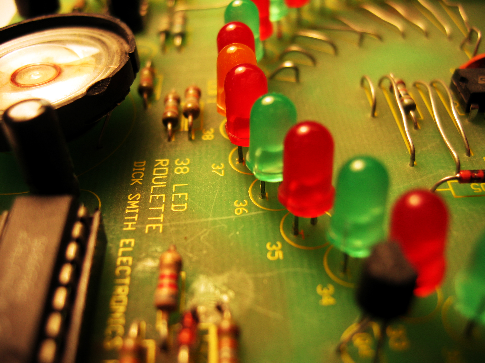
Na prática
Experiências com componentes reais e muito legais fazem parte do kit.
No fim, você poderá fazer suas próprias experiências.
Como funciona
Televisão
Computadores
Fone de ouvido
Celular
A eletrônica que você vai aprender aqui é a base para toda essa tecnologia.
Resumindo o que precisamos fazer:
Gerar
Transportar
Utilizar
Energia
Certo, vamos começar
Antes de partirmos para a prática, preciso que você entenda um pouco sobre energia. Afinal, é disso que estamos tratando aqui.
Existem diversos tipos de energias espalhadas por aí.
Toda essa energia já estava na natureza quando a gente chegou à terra.
No sol, ventos, fogo, explosões, rios.
A grande questão sobre a energia na eletrônica é:
1)Como transformá-la para gerar energia elétrica.
2)Como transportar essa energia para algum lugar.
3)Como utilizar essa energia transportada para fazer alguma coisa útil no destino, como: ligar uma lâmpada, assistir televisão ou movimentar um metrô.
Ok, agora que dividimos o problema, vamos resolver um de cada vez.
Gerando...
Certo, até aqui tudo bem.
Agora, digamos que você queira ligar uma lâmpada no seu quarto.
Você olha para a lista de energias que eu te mostrei e escolhe uma para fazer isso. Digamos, a energia dos ventos.
A partir da sua escolha, temos o primeiro problema.
Precisamos transformar a energia do vento em energia elétrica para poder transportar e utilizar a energia mais facilmente.
Para fazer isso, o pessoal da eletrônica inventou os geradores. Geradores transformam as energias do mundo em energia elétrica.
Para cada energia da terra utilizamos um gerador diferente.
Escolhemos para o nosso exemplo o gerador eólico. Esse cara vai transformar o vento lá da cidade vizinha em energia elétrica.
Bom, agora que já geramos a energia, precisamos levar ela até o seu quarto.
Então vamos em frente.
Exemplos de geradores
Gerador eólico Força dos ventos
Gerador fotovoltaico Calor do sol
Gerador térmico Calor do fogo
Gerador à gasolina Força das explosões
Gerador hidroelétrico Força dos rios
No Brasil
A maior parte da energia vem dos rios
Novidade
A energia dos ventos é uma fonte que vem crescendo no país e já é utilizada em algumas regiões
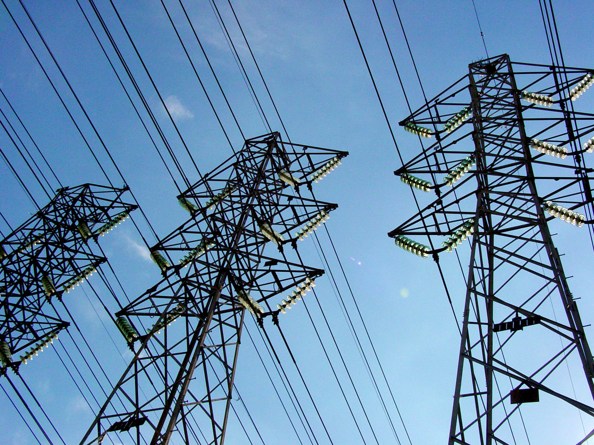
Nós geramos a energia elétrica a partir de uma das outras energias que já existiam na terra, certo?
Mas e agora, como transportar essa energia até a sua casa?
Para realizar esse trabalho, utilizamos um fio que chamamos de condutor.
Quando colocamos a energia elétrica em um pequeno canto desse fio, ela acaba se espalhando por todo o fio.
Com a energia espalhada podemos lá do outro lado do fio, ligar uma lâmpada, utilizando a energia que estava, por exemplo, na cidade vizinha.
Funciona como uma mangueira de jardim. Ao ligarmos o registro de um lado da mangueira, a água se espalha pela mangueira até sair pela outra ponta.
Nesse caso, a mangueira está transportando a água de um lado para outro, da mesma forma que o fio faz com a energia da eletricidade.
Transportando...
Calma amigo, já está chegando à parte prática.
Mas primeiro você tem que entender essa ideia para as práticas ficarem mais fáceis de fazer.
Então escuta isso que é importante.
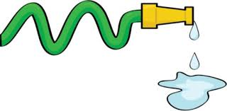
Agora que estamos com energia elétrica do outro lado do fio, só precisamos ligar a lâmpada que está tudo pronto.
O que acabamos de desenhar foi um circuito elétrico.
Esse circuito é muito parecido com o que iremos utilizar na maioria dos exemplos do kit.
Veja como ficou:
Utilizando...
Gerar
Transportar
Utilizar
Chega de Teoria
Entendendo essa ideia de “gerar, transportar e utilizar” você certamente está pronto para aprender sobre a eletrônica e seus principais componentes.
led
diodo emissor de luz
A partir de agora a gente começa a aprender colocando a mão na massa.
Na verdade eu deveria te explicar tudo primeiro para depois fazermos algo. Mas como já falamos bastante sobre energia e não quero que você durma na bancada lendo o guia do kit, vamos fazer funcionar logo alguma coisa e com o tempo vou te explicando melhor como funcionou.
Vai ser mais divertido.
É isso parceiro!
Chegou ao momento tão
esperado.
Vamos iniciar as práticas.
Símbolos e fotos
Diferentes formas de mostrar o mesmo componente
desenho
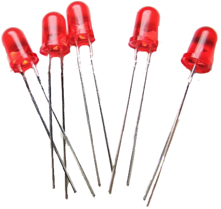
foto real
Pegue o envelope dos leds na caixa do kit pois iremos usá-lo daqui a pouco
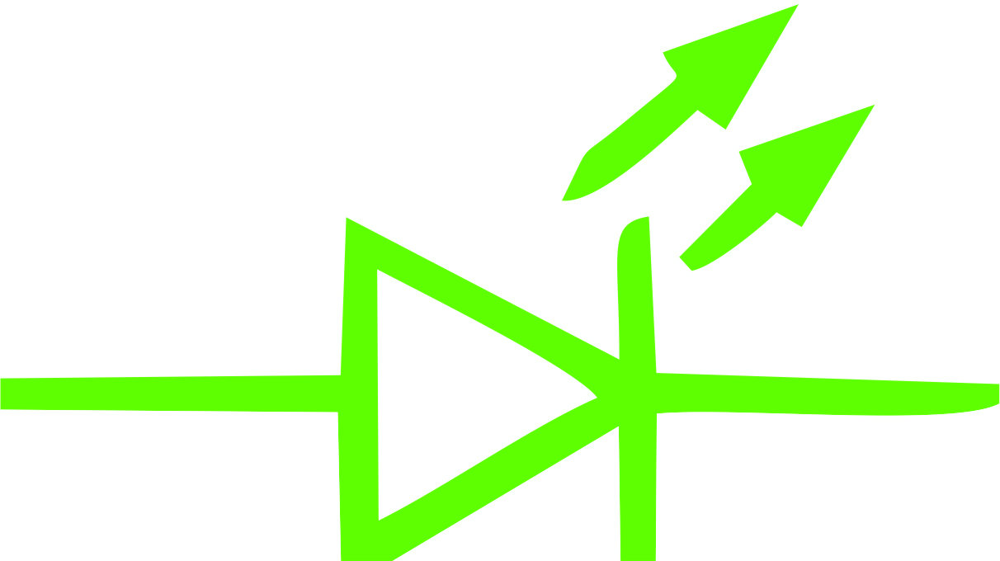
símbolo elétrico
led
led
O que é isso?
O primeiro componente que iremos utilizar é o led.
O led é um diodo emissor de luz. Um nome estranho para dizer que esse componente quando energizado emite luz visível, como uma espécie de lâmpada eletrônica.
Existem leds de diferentes cores, e o nosso kit conta com três diferentes. Vamos utilizar o de cor verde nesse exemplo.
Fique Atento
A energia no led só funciona passando por um dos lados. A diferença no tamanho das pernas do led mostra a diferença dos lados.
Cuidado: Se o led for ligado invertido, mesmo com uma pequena energia, ele nunca mais funcionará.
Para ligarmos o led, precisamos montar o nosso primeiro circuito. Essa prática servirá de base para todos os outros projetos que iremos fazer durante o kit. Mas antes disso, vamos aprender mais algumas coisinhas.
Leia a dica sobre placa de ensaio antes de começar essa prática.

A placa de ensaio ou matriz de contato é uma plaquinha que permite a criação de circuitos experimentais. É composta de vários furos onde grudamos os fios e componentes para que eles se conectem automaticamente.
Confuso né? Calma que você vai entender.
Pense comigo. Para montarmos os circuitos precisamos conectar os fios e componentes. Poderíamos fazer isso enrolando as pernas dos componentes uns nos outros ou ainda enrolando um fio no outro para que fiquem conectados. Certo, isso funcionaria, mas logo estragaríamos os fios, pois tudo ficaria enrolado e confuso.
Para resolver esse problema, nós usamos a placa de ensaio. A placa já possui, dentro dela, uma série de fios ligando um furo no outro fazendo com que a gente não precise fazer essas ligações. O único trabalho que temos é conectar o fio ou componente no furo e ele já se liga com o outro.
Você não consegue ver as ligações, pois elas são feitas dentro da placa, mas as figuras ao lado mostram como os furos estão conectados internamente para que possamos fazer as conexões dos fios e componentes.
Placa de Ensaio
Pegue umas das placas de ensaio do seu kit agora pois vamos utilizá-la.
Vou agora te explicar como fazemos para usá-la.


IMPORTANTE: As colunas de conexão NÂO atravessam o meio da placa. O meio é um separador que faz com que os furos de um lado não estejam ligados com os furos do outro, mesmo estando na mesma coluna.
Para aprender sobre a plaquinha, vamos pensar no exemplo mais simples possível: conectar um fio no outro.
Se conectássemos dois fios fora da plaquinha, ficaria assim:
Agora, veja como fazemos a mesma coisa usando a placa de ensaio do kit:

Mostrando melhor
Em amarelo nesta segunda imagem podemos ver por onde os dois fios estão se conectando internamente.
Volte uma página e relembre todas as conexões internas na placa.
Exemplo Placa de Ensaio

Dois fios soltos

Dois fios grudados
Na plaquinha
Veja como foi feito para conectar os dois fios pela placa.
Inserimos os fios nos buracos da mesma coluna e pronto, eles agora estão ligados por dentro da placa.

Curiosidade
O modelo de placa de ensaio que vamos utilizar no kit é uma miniatura das placas usadas nas industrias de eletrônicos.
O seu funcionamento no entanto é exatamente o mesmo das placas maiores usadas no desenvolvimento de projetos eletrônicos nas empresas.
1
Prática do Led
Acendendo um led.
Nosso primeiro circuito do kit será bem simples. Iremos acender um dos leds utilizando o pacote de pilhas.
Para nossa primeira prática, vamos seguir aquela ideia lá do começo do guia, onde vimos que precisamos de três passos para trabalhar com energia:
Gerar
Transportar
Utilizar
No caso do circuito do led, utilizaremos as pilhas para gerar quimicamente a energia elétrica que precisamos para acender o led. Neste caso pegue o suporte de pilhas já com todas as pilhas inseridas e deixe ao seu lado.
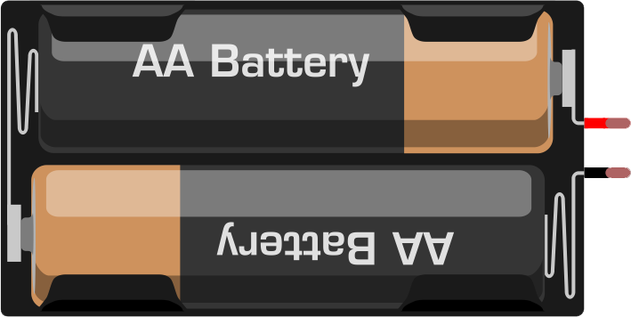
2
3
Material necessário
Pegue agora no kit os seguinte materiais:
- Placa de ensaio
- Led verde
- Resistor Pequeno
- Suporte de pilhas com as pilhas
Já estamos com uma fonte de energia. Para transportar essa energia até o led, usaremos a placa de ensaio. Como te expliquei anteriormente, ela possui internamente os fios que transportarão a energia das pilhas até o led.
Agora, vou precisar que você separe um componente chamado resistor. Depois dessa prática te explico como ele funciona direitinho.
Por enquanto, apenas acredite que precisamos colocar ele no caminho entre o led e as pilhas. Caso contrário o nosso led irá queimar.
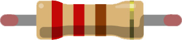
Componentes conectados de verdade
4
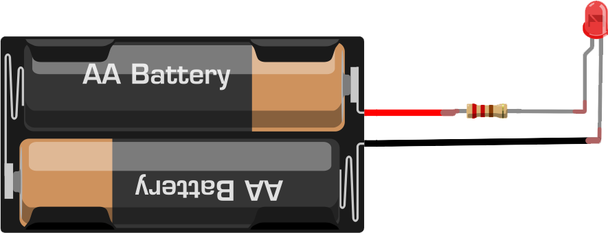
Gerar
Pilhas
Transportar
Placa + Resistor
Utilizar
Led
Diagrama
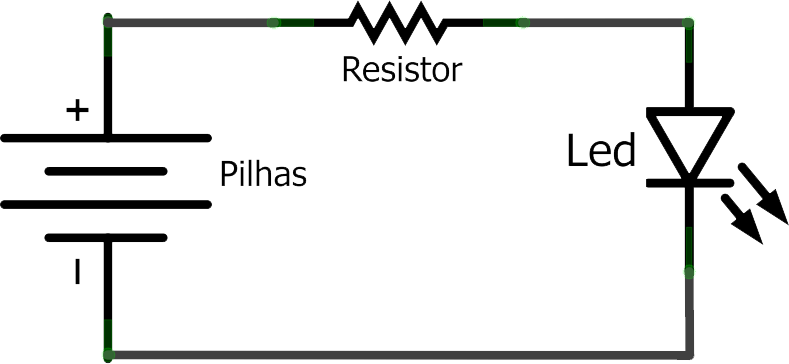
Esquemático
Agora veja nas figuras o desenho do circuito que vamos fazer para ligar o led. As figuras mostram o mesmo circuito sobre diferentes formas.
5
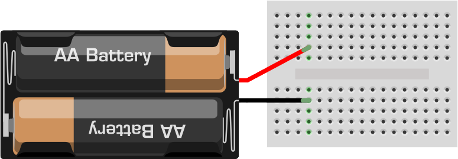
Certo parceiro, você já entendeu qual circuito nós precisamos construir para acender o led. Agora vamos montar ele na placa de ensaios.
Pegue o suporte de pilhas já com as pilhas incluídas e conecte na placa de ensaios da forma indicada na figura. As cores dos fios são importantes. O vermelho é de onde saí a energia e por isso será ligado ao resistor.
Perceba na figura da placa que ficou um traço verde nos lugares conectados. Esse traço representa os pontos da placa que agora estão também conectados nas pilhas. Vamos conectar o resistor no fio vermelho das pilhas, conforme a figura abaixo:
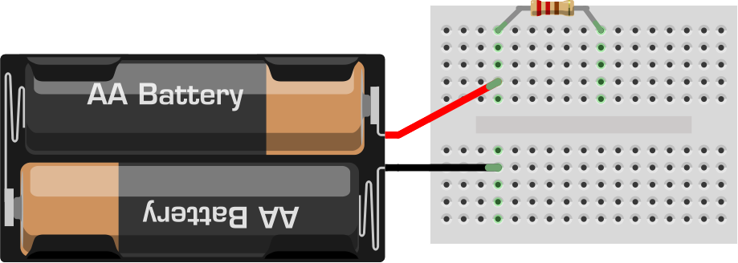
Olhe como conectamos o resistor. Na mesma coluna que estava o fio vermelho da bateria. Isso quer dizer que ligamos o resistor na pilha por um dos lados. A outra perna do resistor criou uma nova coluna verde onde agora podemos ligar o led.
Resultado
Nesse ponto, o seu led deve estar ligado parceiro.
Legal né...
Mas caso ele não tenha ligado:
1) Tente refazer os passos da prática.
2) Troque os componentes que você usou por novos. No kit normalmente temos mais de um componente do mesmo tipo.
Caso ainda assim o circuito não funcione, peça a ajuda de um adulto.
Talvez ele descubra o que deu errado.
6
Parabéns!!!!!
Terminamos o nosso primeiro circuito eletrônico...
A partir de agora os outros circuitos serão mais fáceis, pois você já sabe como utilizar a placa de ensaios e conhece o modelo básico de circuito eletrônico.
Se você já achou o led legal, vai gostar mais ainda dos outros componentes. Temos um monte de outros caras para testar e ver como funcionam. Então vamos em frente que agora o bicho vai pegar.
Agora só falta o led.
Pegue o led verde e conecte como na figura abaixo.
IMPORTANTE: A perna maior do led DEVE ser ligada na perna do resistor e NÂO na perna da pilha.
Isso porque o led SOMENTE funciona ligado desse lado.
Se o led for ligado invertido ele irá queimar e não funcionará mais. Então não esquece. Ligue a perna maior do led no resistor.
Lembrando que as pilhas também não podem estar invertidas. O fio vermelho deve estar ligado no resistor conforme a imagem.
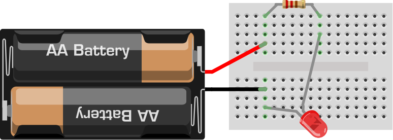
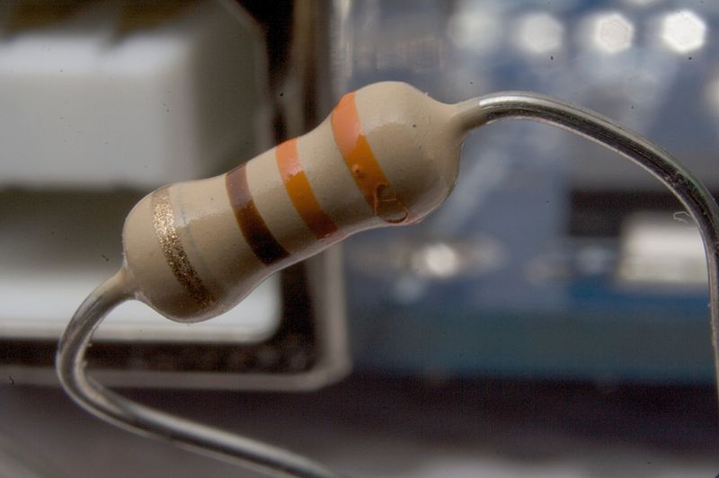
resistor
Utilizamos um resistor para montar o circuito do led sem saber o porquê. Agora vamos entender como ele funciona, para que ele serve e por quais motivos tivemos que usá-lo para acender o led.
Resumindo: O resistor é um componente utilizado para dificultar a passagem de eletricidade no fio.
Em muitos circuitos é necessário diminuir a quantidade de energia que passa para não danificar os outros componentes presentes no circuito.
Vou tentar explicar como isso aconteceu no circuito do led que montamos anteriormente.
Já vimos isso!!
Agora vamos entender como ele funciona e para que ele serve
Símbolos e fotos
Diferentes formas de mostrar o mesmo componente
desenho
Pegue o envelope dos resistores na caixa do kit pois iremos usá-lo daqui a pouco
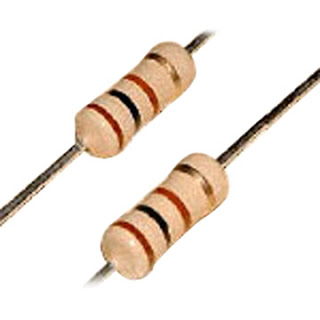
foto real
smbolo elétrico
resistor
Resistor
O que é isso?
Quando montamos o circuito do led utilizamos como fonte de energia um pacote de pilhas, certo?
Ao conectarmos as pilhas na placa, possibilitamos a transmissão de energia ao led (luz).
Até esse ponto é fácil entender. Agora a novidade que eu ainda não havia contado.
A energia presente nas pilhas é muito grande para o pequeno led e por isso não o ligamos direto na pilha.
Se tivéssemos ligado o led diretamente nas pilhas ele queimaria. Isso mesmo.
Para evitar que ele queime utilizamos o resistor. O resistor restringe a energia que chega ao led para que ele não queime.
Todos os componentes na eletrônica funcionam até um limite de energia. Por isso o resistor é tão importante, pois controla a energia que chega a todos os componentes eletrônicos.
No nosso kit, possuímos resistores de vários tamanhos. Na verdade, eles são todos do mesmo tamanho físico, o que varia é a sua resistência. Quanto maior a resistência mais difícil é a passagem de energia através dele.
1
Prática dos Resistores
Acendendo leds com diferentes resistores
No nosso segundo circuito vamos ligar dois leds iguais usando resistores de diferentes tamanhos
Você acreditou no meu papo do resistor né. Então vamos à prova do seu funcionamento.
Nessa prática vamos ligar dois leds iguais através de resistores de diferente tamanhos. Como iremos utilizar diferentes tamanhos de resistor, você poderá observar uma diferença no brilho dos dois leds. Ou seja, existem diferentes quantidades de energia chegando aos leds e com isso o led que recebe mais energia brilha mais do que o outro led.
As próximas figuras representam o circuito que iremos montar.
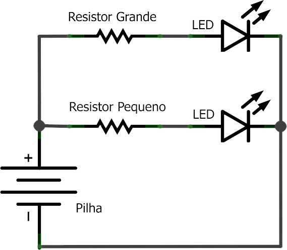
Esquemático
Material necessário
Pegue agora no kit os seguinte materiais:
- Placa de ensaio
- 2 Leds da mesma cor
- Resistor Pequeno
- Resistor Grande
- Suporte de pilhas com as pilhas
2
Beleza, agora que você já sabe o que faremos vamos colocar a mão na massa. Conecte as pilhas na placa de ensaios conforme a figura abaixo. Lembre-se de deixar o fio vermelho (de onde sai à energia) de um lado da placa e o fio preto de outro, como na figura.
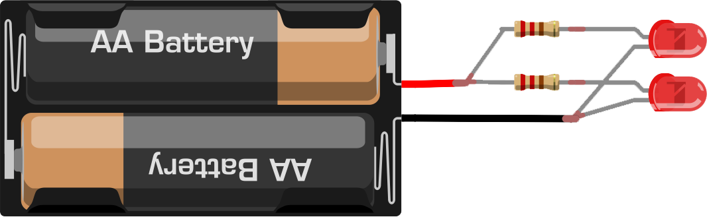
Componentes conectados de verdade
3
5
No kit, pegue dois resistores.
Um deles do envelope com o tamanho GRANDE e outro resistor com o tamanho PEQUENO.
4
Agora, ligue cada um dos leds em um resistor diferente e no fio preto das pilhas.
IMPORTANTE: As pernas maiores dos leds DEVEM ser ligados nos resistores. Caso contrário os leds queimarão.
Agora conecte os dois resistores na placa de ensaios conforme a imagem. Os dois ficam ligados no fio vermelho das pilhas por um dos lados. Do outro lado, cada resistor precisa ser conectado em uma coluna diferente, pois ligaremos os leds neles.
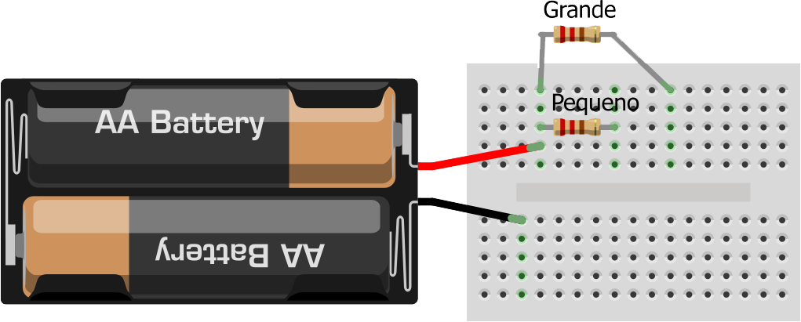
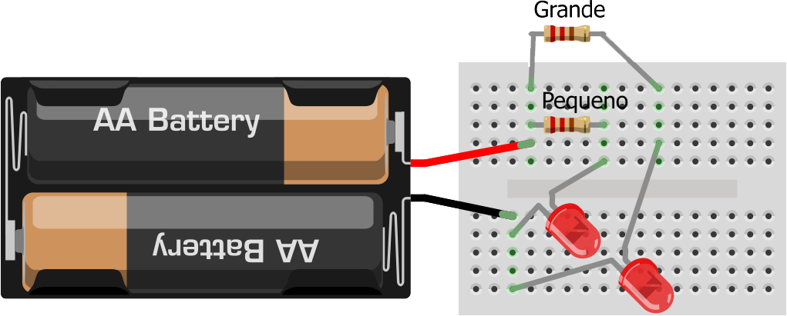
Parabéns!!!!!
Se tudo deu certo os dois leds devem ter ligado.
Mas cara, repare como um deles está brilhando bem mais que o outro. Isso aconteceu porque nós ligamos uma resistência menor no led que está brilhando mais.
Com uma menor resistência, mais energia está chegando nele e por isso acontece essa diferença no brilho.
Interessante né...
Essa experiência não é das mais legais, mas é importante porque precisava que você entendesse bem o que é um resistor. Entender o resistor é muito importante para fazermos todas as outras práticas do kit.
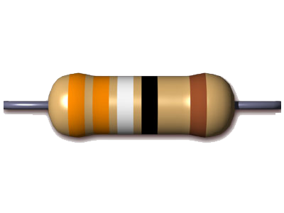
Os resistores são pequenos componentes que contam com inúmeros valores de resistência diferentes entre eles. Com tantos valores, é muito importante que possamos distinguir um resistor do outro.
Inicialmente o pessoal da eletrônica imaginou que poderia escrever o valor do resistor no próprio componente, mas, devido ao tamanho tão pequeno do resistor, ficou muito difícil realizar essa tarefa. Então, para resolver esse problema, foi criado o código de cores para resistores. O código de cores identifica o tamanho do resistor através de faixas coloridas que ficam ao redor do componente. Cada conjunto de cores representa um tamanho diferente.
As primeiras três faixas servem para indicar o valor do tamanho do resistor de fato, e a última faixa serve para informar o quanto aquele valor de tamanho pode variar.
Não vou te explicar todo o código de cores aqui, mas se você quiser saber mais sugiro que pesquise na internet a respeito. O importante agora é você saber as cores dos três resistores do kit. E são elas:
Resistor Pequeno: Laranja, Laranja, Marrom, Dourado.
Resistor Médio: Amarelo, Violeta, Vermelho, Dourado.
Resistor Grande: Amarelo, Violeta, Laranja, Dourado.
Código de Cores
Você misturou os resistores grandes e pequenos e agora não sabe mais qual é qual né?
Sabia que isso aconteceria. Vamos resolver o problema:
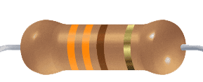
Resistor Pequeno
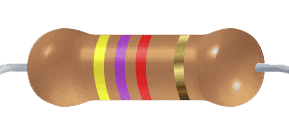
Resistor Médio
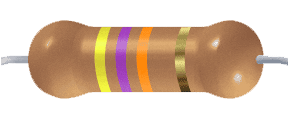
Resistor Grande
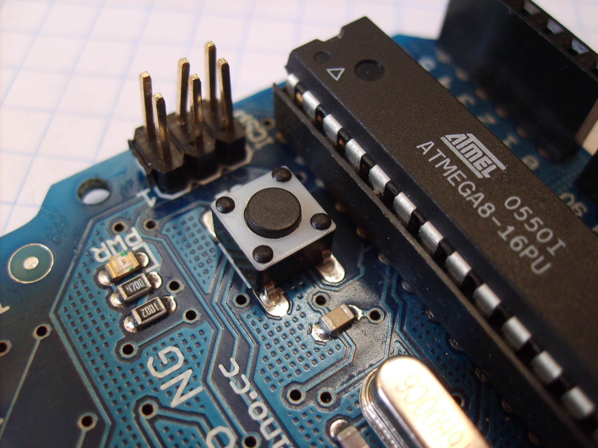
Um dos mais legais!
Esse componente é um dos que eu mais gosto no kit. Além de ser bem útil.
botão
botão de pressão ou táctil
Neste momento você já está entendendo muita coisa sobre circuitos. Uma das coisas que eu sei que você percebeu é que o circuito depois de montado pode ser desligado retirando um dos componentes da placa.
Até que é fácil retirar um dos componentes do circuito. Afinal, é só retirar um fiozinho e pronto, tudo para. Mas e se você quiser ligar ele novamente para mostrar para alguém? Você precisa lembrar onde conectar aquele componente ou fio e religá-lo para que o circuito volte a funcionar.
Isso é um pouco chato né, ficar tirando e colocando componentes depois de tudo pronto.
Para você não precisar fazer isso o pessoal da eletrônica criou o maravilhoso botão, que vamos utilizar agora.
Vire a página que te explico melhor sobre ele.
Símbolos e fotos
Diferentes formas de mostrar o mesmo componente
desenho
foto real
Pegue o envelope dos botões na caixa do kit pois iremos usá-lo daqui a pouco

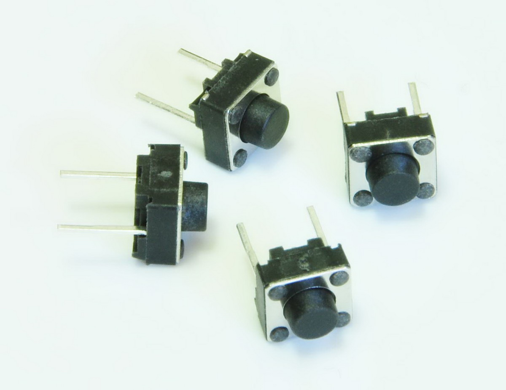
símbolo elétrico
botão
botão
O que é isso?
O botão de pressão é um componente com a função de fechar ou abrir um circuito elétrico. Simples assim.
Utilizando o botão não precisamos retirar nada da placa para desativar o circuito. Em vez disso, colocamos o botão que possuímos no kit no meio do circuito que desejamos interromper.
Agora, enquanto não apertamos nada, o circuito se mantém aberto. Quando apertamos o botão e o mantemos pressionado, o circuito fecha como se tivéssemos conectado o fio na placa.
Faça a experiência do botão que você vai ver como é massa o funcionamento.
Lembrete: Essas práticas do inicio são para você aprender como cada componente funciona. Depois que você tiver entendido como cada um funciona, lá no final, possuímos várias experiências práticas mais complicadas e legais juntando diferentes componentes nos mesmos circuitos.
1
Prática do Botão
Acendendo um led com um botão
Para testarmos o botão vamos utilizar o mesmo circuito do led, mas no caminho colocaremos um botão
A gente está chegando cada vez mais rápido nas práticas, hein. Agora estou gostando de ver.
Pegue um dos botões do kit na mão. Note que ele possui quatro perninhas como na figura ao lado. No nosso exemplo só vamos utilizar as duas de cima: uma para a entrada e outra para a saída do circuito. As outras duas deixaremos soltas. Note no desenho do circuito como vamos fazer.

Esquemático
Componentes conectados de verdade
Material necessário
Pegue agora no kit os seguinte materiais:
- Placa de ensaio
- Led de qualquer cor
- Resistor Pequeno
- Botão
- Suporte de pilhas com as pilhas

Veja na figura com os componentes de verdade como os dois pezinhos de baixo do botão ficam no ar. Essa forma de conexão é intencional e o nosso circuito só funcionará se for conectado assim.
Vamos começar as ligações na placa de ensaios agora para fazer o botão funcionar na prática.
3
2

Certo. Temos na parte de cima duas pernas do botão. Na coluna da primeira perna ligaremos o fio vermelho das pilhas, onde vai entrar a energia. O fio preto será ligado na parte de baixo em qualquer coluna longe do botão, como na imagem abaixo.
Começamos conectando o botão na placa de ensaios conforme a figura abaixo. Note que o botão deve ficar no meio da placa pelo lado esquerdo, pois iremos montar o circuito nas pernas de cima do botão. Nenhum componente deve ser conectado nas pernas da parte de baixo do botão.

5
4

Ficou fácil. Só falta ligar o led fechando o circuito. Pegue o led e ligue a perna MAIOR do led no resistor. A perna menor ligue no fio preto.
Como já te falei antes, não ligue o led invertido, pois ele não vai funcionar e ainda vai queimar. A imagem abaixo mostra como deve ser feita a ligação.

Agora cara, nós já estamos com a energia ligada na entrada do botão. Na outra perna do botão nós vamos continuar o circuito.
Ligue o resistor na coluna da outra perna do botão conforme a figura abaixo para continuar a montar o circuito.
Resultado
Nesse ponto, o seu led deve ligar ao apertarmos o botão.
Legal né...
Mas caso ele não tenha ligado:
1) Tente refazer os passos da prática.
2) Troque os componentes que você usou por novos. No kit normalmente temos mais de um componente do mesmo tipo.
Caso ainda assim o circuito não funcione, peça a ajuda de um adulto.
Talvez ele descubra o que deu errado.
Parabéns!!!!!
O circuito está pronto.
Agora veja só: o led não está ligado porque o botão mantém o circuito aberto, como se estivesse desconectado.
Aperte o botão agora.
Veja que o led acendeu. Isso acontece porque o pequeno botão quando apertado fecha o circuito fazendo com que a energia chegue ao led.
Com esse circuito montado, podemos ligar o desligar o led sem ter que remover nenhum componente do circuito.
Possuímos uma fonte para gerar a energia, no caso, as pilhas.
Em seguida, conectamos um resistor, que vai determinar o quanto da energia da fonte vai passar pelo circuito.
Incluímos também um sensor, que olha para o mundo fora do circuito e dependendo do que aconteça toma uma atitude diferente. Até agora como sensor utilizamos somente o botão. O botão olha para o nosso dedo e dependendo do que o nosso dedo faz ele decide se abre ou fecha o circuito.
Lá na ponta final do circuito possuímos o atuador, que é o cara que faz as coisas que queremos fazer de fato. Até agora só usamos o led como atuador.
Essa lógica é a base para toda a eletrônica. Para testar os componentes quase sempre iremos substituí-los nesse mesmo circuito básico.
Lembrando que a gente usa o resistor para que a energia elétrica não derreta o fio ou queime o atuador (no caso, o led). O resistor é um cara bem mais forte que o fio e segura um pouco da energia para que o fio não pegue fogo.
Circuito Elétrico
Estamos indo muito bem amigo. A partir desse ponto você já conhece a lógica básica na montagem dos circuitos.
Só vamos relembrar um pouco para que a gente não se perca.
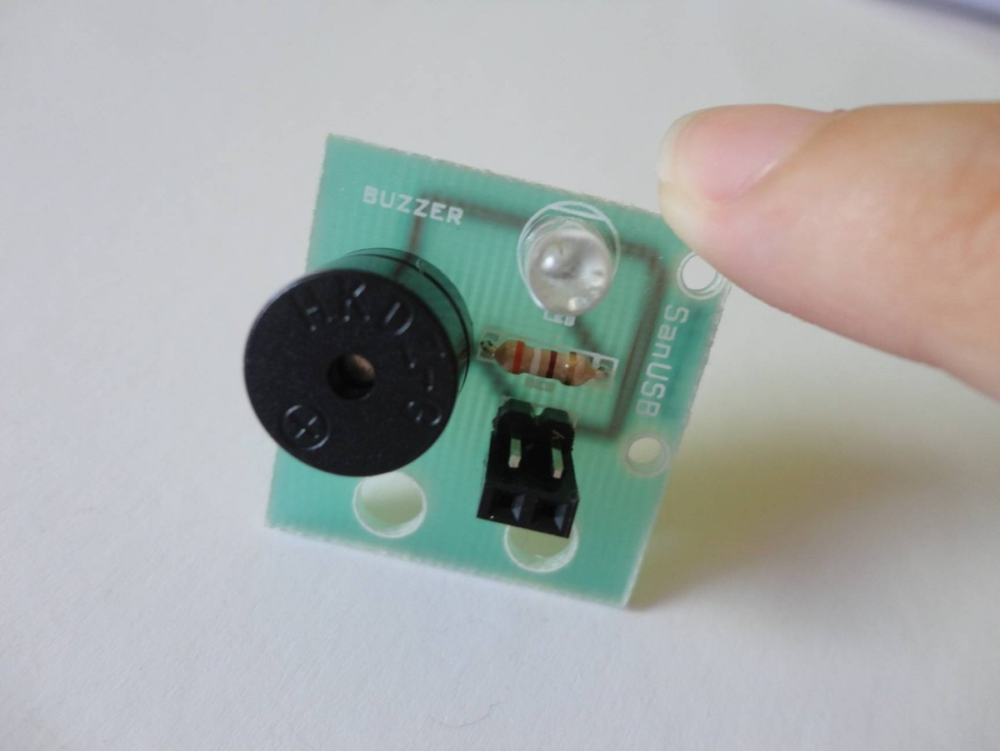
buzzer
campainha elétrica
O componente buzzer que vamos utilizar agora é um atuador.
Ou seja, da mesma forma que o led, é um componente de fim de circuito. Ele é o que no fim de tudo faz na prática o que queremos que o circuito faça.
Vamos a ele de uma vez, já estou louco para testar o buzzer na prática.
Vamos ao som!
Agora é a hora de deixarmos a luz dos leds de lado e fazermos um pouco de barulho
Símbolos e fotos
Diferentes formas de mostrar o mesmo componente
desenho
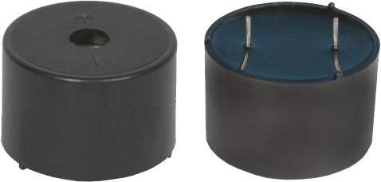
foto real
Pegue o envelope do buzzer na caixa do kit pois iremos usá-lo daqui a pouco
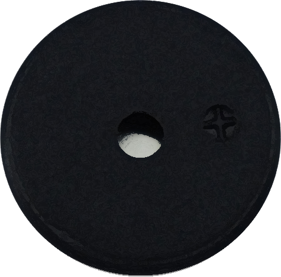
símbolo elétrico
buzzer
buzzer
O que é isso?
Nosso próximo componente é o buzzer.
Esse componente é tão simples que consegue funcionar sem a necessidade da utilização de um resistor. A energia das pilhas não é capaz de danificá-lo e, portanto, o ligaremos diretamente na fonte de energia para facilitar o circuito.
Aposto que você deve estar pensando: “Já entendi que o buzzer é um atuador”.
É exatamente isso cara. Mas, diferente do led que atua iluminando o seu quarto, o buzzer quando energizado atua fazendo barulho. Funciona como uma espécie de sirene ou alto-falante. Vamos logo para a prática que você vai entender melhor.
1
Prática do Buzzer
Fazendo barulho
O circuito do buzzer é o mais fácil de todos. Ligaremos ele diretamente nas pilhas.
Nessa prática nem vou te enrolar muito porque ela é super fácil de fazer. O único cuidado que você deve ter é o de ligar o buzzer do lado certo.
No componente, existe um sinalzinho de + em cima de um dos dois pinos. Esse pino com o sinal de + DEVE ser ligado no fio vermelho das pilhas. Cuidado para não ligar virado pois isso pode estragar o componente. As próximas imagens mostram o esquemático e os componentes reais ligados.
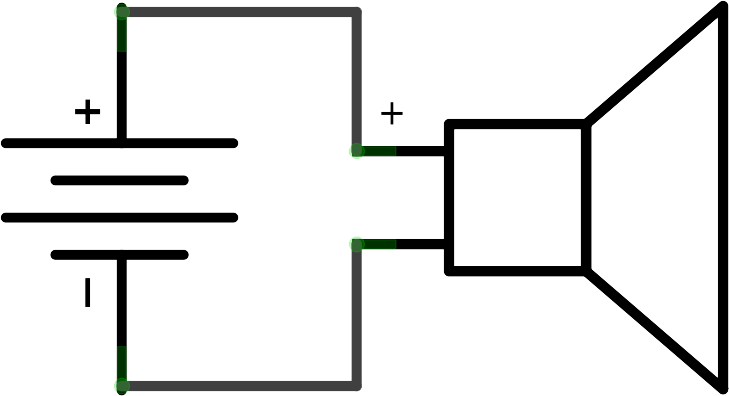
Esquemático
Componentes conectados de verdade
Material necessário
Pegue agora no kit os seguinte materiais:
- Placa de ensaio
- Buzzer
- Suporte de pilhas com as pilhas
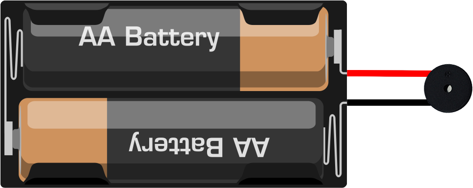
Viu como é fácil amigo. Só quero te lembrar novamente: O pino do buzzer com o sinal de + precisa ser ligado no fio vermelho das pilhas.
Vamos montar na placa de ensaios agora, para ver esse buzzer fazendo barulho.
Resultado
Nesse ponto, o seu buzzer deve estar apitando parceiro.
Legal né...
Mas caso ele não tenha ligado:
1) Tente refazer os passos da prática.
2) Troque os componentes que você usou por novos. No kit normalmente temos mais de um componente do mesmo tipo.
Caso ainda assim o circuito não funcione, peça a ajuda de um adulto.
Talvez ele descubra o que deu errado.
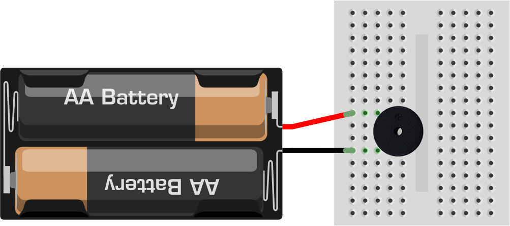
Parabéns!!!!!
O circuito está pronto.
O buzzer faz mesmo uma barulheira hein.
Se você já estiver confiante para isso, pode tentar montar um circuito que acione o buzzer com um botão. Para isso, basta colocar o componente botão entre as pilhas e o buzzer.
Mas não fique preocupado caso não consiga montar esse circuito agora, pois ele não é necessário. Isso porque mais tarde certamente usaremos novamente o buzzer em algum outro circuito mais complicado.
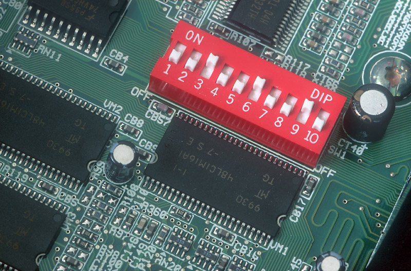
interruptor
Hora de facilitarmos nossa vida com mais um componente legal.
Nossos circuitos estão ficando cada vez maiores e você deve estar preocupado em ter que ficar apertando botões sem parar. É um pouco chato, certo?
Seria legal se apertássemos o botão e ele ficasse assim, paradinho, mantendo o circuito funcionando.
Então cara, o pessoal da eletrônica pensou nisso também. Por isso foram criados os interruptores.
Vira a página que te explico.
dip switch em inglês
Selecionando!
Voltamos agora para um parente do nosso botão.
Vem comigo...
Símbolos e fotos
Diferentes formas de mostrar o mesmo componente
desenho
foto real
Pegue o envelope dos interruptores na caixa do kit pois iremos usá-lo daqui a pouco.
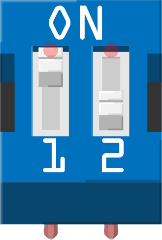
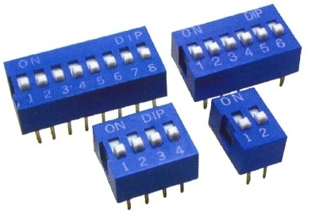
símbolo elétrico
interruptor
interruptor
O que é isso?
Esses eu garanto que você conhece bem, porque você já utiliza interruptores na sua casa, quando resolve ligar a luz do seu quarto. Os interruptores que usaremos no kit são iguais ao do seu quarto. A diferença é que são bem menores para caber na nossa placa de ensaios.
Os interruptores funcionam da mesma maneira que o interruptor que liga a luz do seu quarto. Direcionando a chave para um dos lados, o circuito abre. Quando mudamos para o outro lado, ele fecha.
Esse sensor tem a funcionalidade parecida com o botão, mas no caso dos interruptores nós não precisamos ficar pressionando o tempo todo.
Quando fechamos o circuito ele fica ali, quietinho, até trocarmos a posição novamente.
Agora chega de papo a vamos ao que interessa.
1
Prática do Interruptor
Ligando e desligando
Usaremos as chaves para ligar e desligar o nosso grande amigo led.
O nosso circuito do interruptor é exatamente igual ao do botão. Vamos incluir o interruptor no meio do circuito do led para ligar e desligar a luz. As figuras abaixo mostram o circuito que será montando para essa prática.
Note que o interruptor que temos no kit possui duas chaves, com os números 1 e 2. Nessa prática usaremos somente a chave de número 1, conforme a imagem.
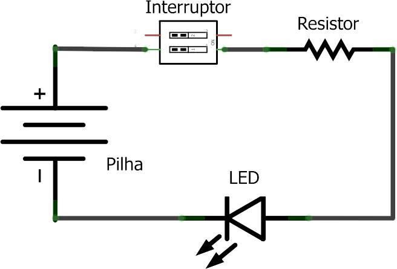
Esquemático
Componentes conectados de verdade
Material necessário
Pegue agora no kit os seguinte materiais:
- Placa de ensaio
- Led de qualquer cor
- Resistor Pequeno
- Interruptor
- Suporte de pilhas com as pilhas
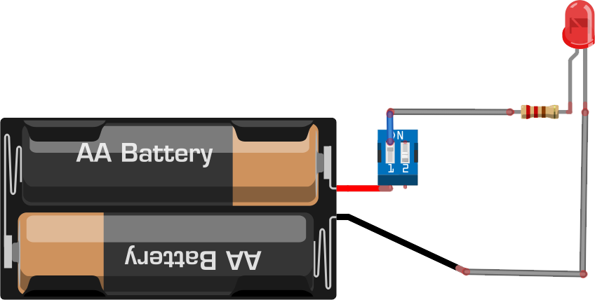
Viu só como é simples amigo. É o nosso velho circuito do led com o interruptor no meio. Vamos para a placa de ensaios incluir um componente por vez e colocar esse led para funcionar.
2
Primeiro pegue o interruptor e conecte na placa como na imagem abaixo. O componente deve ser colocado na divisão da placa exatamente como na imagem abaixo, pois os dois pinos de cima não podem estar conectados com os pinos de baixo.
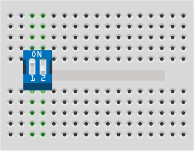
3
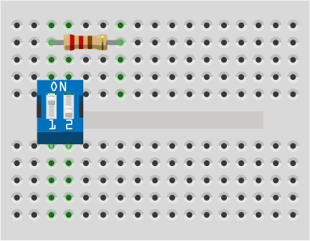
O circuito será ligado na chave 1 do interruptor, nos dois pinos da esquerda do componente. No pino da chave 1 na parte superior da placa começamos conectando o resistor que será ligado ao led. Veja como fazer a conexão na figura abaixo.
4
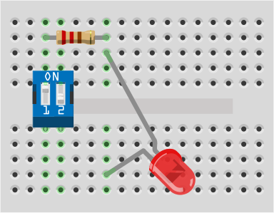
Note as trilhas verdes que mostram as conexões na imagem acima.
A perna esquerda do resistor está conectada no pino de cima da chave 1. A perna direita do resistor está na coluna verde da perna maior do led, na parte de cima da placa.
A outra perna do led está ligada em uma trilha verde solta na parte de baixo da placa, ainda sem ninguém. É onde conectaremos o fio preto da pilha. A parte de baixo da chave 1 também não possui nada conectado. É nessa trilha que ligaremos o fio vermelho da pilha. Assim vamos fechar o circuito.
Agora, ligue o led no resistor da forma que você já conhece. Deixa a segunda perna do resistor ligada na parte inferior, mas longe do interruptor.
IMPORTANTE: A perna maior do led DEVE ser ligada no resistor. Caso contrário o led queimará.
Resultado
Nesse ponto, o seu led deve ligar ao acionar o interruptor.
Legal né...
Mas caso ele não tenha ligado:
1) Tente refazer os passos da prática.
2) Troque os componentes que você usou por novos. No kit normalmente temos mais de um componente do mesmo tipo.
Caso ainda assim o circuito não funcione, peça a ajuda de um adulto.
Talvez ele descubra o que deu errado.
Parabéns!!!!!
Agora é com você. Mova a chave 1 do interruptor para cima e para baixo e note como ela liga e desliga o led. Legal né.
O interruptor pode ser inserido no meio de qualquer um dos nossos circuitos para fazer a função de liga e desliga, facilitando a nossa vida.
Estamos indo muito bem cara, já testamos vários componente e você já está dominando a placa de ensaios. Chegou a hora de um pouco mais de teoria sobre eletrônica.
Vamos em frente.
Conecte agora as pilhas no circuito.
O fio vermelho você liga na coluna embaixo da chave 1 do interruptor. O fio preto você liga na coluna da perna menor do led, como na imagem acima. E pronto.
5
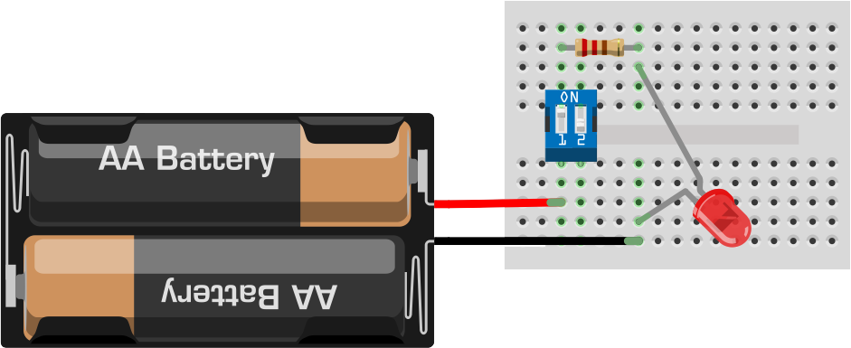
Bom, agora vem um punhado de componentes legais, que vamos aprender em uma tacada só. São os sensores resistivos.
Os sensores resistivos são componentes iguais aos resistores. Lembra-se do circuito em que testamos os resistores, e conforme colocávamos diferentes tamanhos de resistores o led brilhava mais ou menos? Dava um pouco de trabalho né... Tínhamos que usar dois resistores e dois leds, pois cada resistor tinha um valor de resistência fixa.
Os sensores resistivos fazem essa troca de resistência para gente sem precisarmos de dois componentes. Devido a certas propriedades físicas ou químicas, os componentes variam o valor de suas resistências de acordo com certas características, como luminosidade ou temperatura.
No kit nós vamos trabalhar com dois sensores resistivos diferentes:
a. Potenciômetro (mecânico)
b. Fotorresistência (luz)
Vamos a cada um deles que você vai entender melhor.
Sensores Resistivos
Como estamos indo? Tudo tranquilo até aqui?
Preciso que você esteja entendendo realmente o funcionamento dos circuito. Não é tão complicado assim afinal, certo?

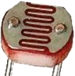
Sensores Resistivos do Kit.
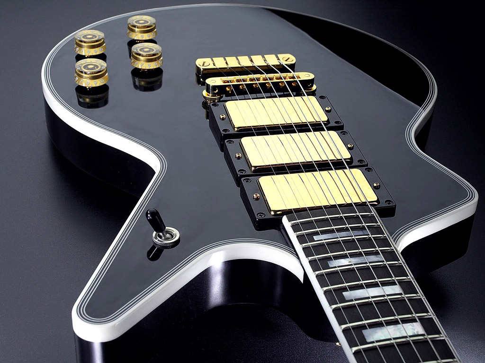
potenciômetro
sensor resistivo mecânico
O potenciômetro é o mais simples sensor resistivo. Esse componente, por ser um sensor resistivo, funciona como um resistor que pode mudar de valor, como te falei antes.
No caso do potenciômetro, a mudança do valor é feita mecanicamente. Isso quer dizer que você gira a haste do componente para que ele altere o valor da sua resistência.
O potenciômetro é bastante usado para controlar o volume de rádios antigos, você já deve ter visto por aí. Ou ainda para controlar o volume de guitarras, como na imagem acima.
Agora vamos testá-lo na prática.
Variando a
resistência
Nosso primeiro sensor resistivo funciona mecanicamente... Me acompanhe nessa.
Símbolos e fotos
Diferentes formas de mostrar o mesmo componente
desenho
foto real
Pegue o envelope do potenciômetro na caixa do kit pois iremos usá-lo daqui a pouco
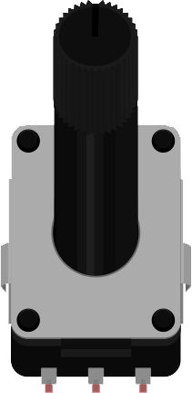
símbolo elétrico
potenciômetro
potenciômetro
O que é isso?
Como te expliquei na página anterior, o potenciômetro é um componente eletrônico que possui resistência elétrica ajustável.
O componente possui três terminais onde a conexão central é deslizante e manipulável. Os outros dois terminais são os extremos do resistor. Ou seja, se utilizássemos os dois pinos dos extremos, teríamos o valor máximo de resistência do potenciômetro, mas não seria possível variar a resistência.
Por isso usaremos o pino do meio e um dos extremos. Com isso, ao girar a haste, o pino do meio vai alterando a sua posição dentro do componente, mudando o valor de resistência do componente.
Vamos para a prática que você vai entender melhor.
1
Prática do Potenciômetro
Variando a intensidade de um led
Nesse circuito vamos alterar o brilho de um led girando a haste do potenciômetro.
Pegue o potenciômetro do kit na mão. O nosso componente possui três pernas para conexão na placa e uma haste que gira para ambos os lados. Conforme giramos a haste, a resistência entre o pino do meio e um dos pinos dos cantos varia, aumentando ou diminuindo. É por isso que usaremos nesse circuito o pino da esquerda e o pino do meio para ligarmos em nosso projeto.
Agora que já sabemos como o nosso componente funciona, você já deve estar careca de saber qual circuito vamos montar para ligar o led nesse resistor variável. Devemos ligar um dos pinos do nosso potenciômetro (resistor variável) nas pilhas, e o outro pino (do meio) na perna maior do led, como nos outros exemplos. Só que temos um problema.
Quando giramos a haste do potenciômetro totalmente para o lado esquerdo, a resistência fica zero, como se não tivesse resistor nenhum no caminho entre o led e as pilhas. Isso poderia queimar o led, como você sabe.
Esquemático
Material necessário
Pegue agora no kit os seguinte materiais:
- Placa de ensaio
- Led de qualquer cor
- Resistor Pequeno
- Potenciômetro
- Suporte de pilhas com as pilhas

Para resolver esse problema colocaremos no meio do caminho entre o resistor variável e o led mais um resistor pequeno. Com isso, garantimos que o led não vai queimar mesmo que o nosso potenciômetro esteja virado totalmente para o lado em que a sua resistência é zero, porque o outro pequeno resistor, que é fixo, garantirá uma resistência mínima ao circuito.
Entenda melhor nas imagens do circuito abaixo.
Componentes conectados de verdade
2


Vamos agora para a nossa amiga placa de ensaios. Montando um componente por vez fica mais fácil entender como os componentes estão conectados no circuito do potenciômetro.
Começamos ligando o componente que queremos testar. Ligue o potenciômetro na placa como na imagem abaixo.
No exemplo abaixo a haste aparece para dentro da placa para facilitar a figura, mas na vida real conecte o potenciômetro com a haste para fora da placa.
3
Bom, estamos com o nosso potenciômetro conectado. Então, como te falei, ele vai funcionar como um resistor. As duas pernas que farão o papel de resistor serão a primeira e a segunda perna.
Mas como temos aquele problema de em alguns casos a resistência do potenciômetro ser zero, vamos ligar um resistor pequeno na primeira perna do potenciômetro para garantir que não vamos queimar o led. Confere na imagem.

4
Tranquilo né parceiro. Até agora temos um resistor que varia conforme giramos a haste e tem a resistência mínima no valor do pequeno resistor que ligamos na sua entrada.
Agora seguimos o circuito do led que você já sabe melhor do que eu. Ligamos a perna MAIOR do led no pino do MEIO do potenciômetro.
A perna menor do led, deixamos conectada no outro lado da placa. A imagem está na próxima página.
Atuador
Quando você gira a haste do potenciômetro, você está atuando no circuito.
Por isso esses tipos de componentes que permitem que você altere algo no circuito são chamados de atuadores.
No caso do potenciômetro, nós estamos atuando na resistência do circuito mecanicamente, fazendo o led brilhar mais ou menos.
Agora só está faltando ligar as pilhas ao circuito para fornecermos a energia necessária. Faça a conexão do fio vermelho no resistor e do fio preto na perna pequena do led. Use a imagem abaixo como guia.
Parabéns!!!!!
O circuito está pronto.
Agora gire a haste do potenciômetro para os dois lados e veja o que acontece. Conforme você vai diminuindo ou aumentando a resistência, a energia que chega ao led aumenta ou diminui também, fazendo o led iluminar mais ou menos, dependendo da posição da haste do potenciômetro.


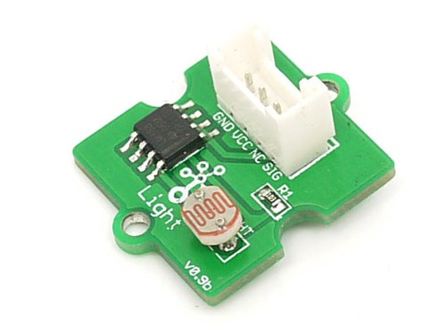
fotoresistência
LDR - resistor dependente de luz
O segundo sensor resistivo que iremos utilizar é o que eu considero mais legal, chamado de fotorresistência ou resistor dependente de luz.
Esse componente se comporta como um resistor que pode variar a sua resistência.
Isso mesmo, funciona igual ao potenciômetro, a diferença é que a variação de resistência não é feita girando a haste, mas sim mudando a quantidade de luz que o componente recebe.
Quanto mais luz no componente, menor é a sua resistência.
Vamos à luz!
Depois de muito criar luz através dos led, chegou a hora de utilizá-la em um atuador.
Símbolos e fotos
Diferentes formas de mostrar o mesmo componente
desenho
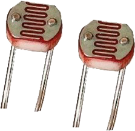
foto real
Pegue o envelope dos ldr na caixa do kit pois iremos usá-lo daqui a pouco
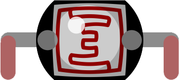
símbolo elétrico
ldr
ldr
O que é isso?
O LDR, Resistor Dependente de Luz ou basicamente fotocélula, é um tipo de resistor que varia sua resistência a partir da luminosidade captada.
O material utilizado nesse componente tem a propriedade de diminuir sua resistência quando a luminosidade sobre ele aumenta. Já quando está escuro ou a luminosidade é baixa, a sua resistência é aumentada.
Escuridão: resistência máxima, o led não acende porque a energia não passa pelo componente.
Luz muito brilhante: resistência mínima, o led acende porque boa parte da energia passa pelo componente.
1
Prática do LDR
Acendendo led com fotoresistor
O circuito do ldr é igual ao circuito do led, mas no lugar do resistor usamos o ldr. Você verá a diferença.
Para você que já chegou até aqui essa prática é super fácil de montar. O circuito é o mais simples possível. Montaremos um circuito comum para acender o led, trocando o resistor pelo LDR. A diferença vai acontecer no brilho do led. Sempre que a luz do ambiente aumenta, a resistência do LDR diminui e o led brilha mais. Quando escurece, acontece o contrário, o led se desliga. Veja a ilustração do circuito nas figuras abaixo.
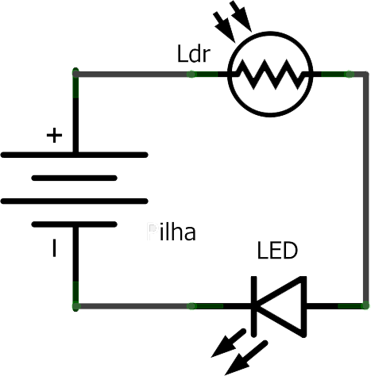
Esquemático
Material necessário
Pegue agora no kit os seguinte materiais:
- Placa de ensaio
- Led de qualquer cor
- LDR (fotoresistor)
- Suporte de pilhas com as pilhas
Componentes conectados de verdade
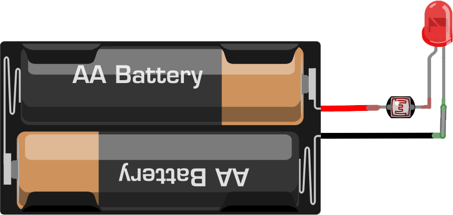
Viu como é tranquilo de montar. Mesmo assim vamos ao passo a passo para garantir que nada fique confuso.
Não esqueça que a perna MAIOR do led deve ser ligada no LDR, que faz a função do resistor no circuito.
2
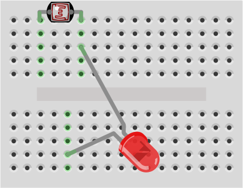
Comece colocando o LDR na placa de ensaios como na imagem abaixo.
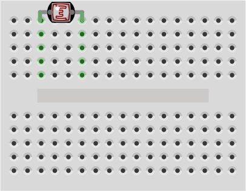
3
Pronto, agora vamos conectar o led. Não canso de te lembrar cara, ligue a perna maior do led no LDR e deixe a perna menor na parte de baixo da placa para ligarmos o fio preto da bateira.
Beleza. Agora vá para a próxima página para fecharmos esse circuito.
Resultado
Nesse ponto, o seu led deve estar ligado parceiro.
Legal né...
Mas caso ele não tenha ligado:
1) Tente refazer os passos da prática.
2) Troque os componentes que você usou por novos. No kit normalmente temos mais de um componente do mesmo tipo.
Caso ainda assim o circuito não funcione, peça a ajuda de um adulto.
Talvez ele descubra o que deu errado.
4
Parabéns!!!!!
Agora veja que o led está ligado, fraquinho...
Coloque o dedo sobre o LDR para tapar a luz. Pode até encostar no componente. Note que o led desliga de vez. Isso acontece porque sem a luz a resistência do LDR aumenta tanto que não passa mais nenhuma energia em direção ao led.
Colocar o LDR perto de uma luz forte vai fazer com que o led aumente o seu brilho. Isso acontece porque a luz diminui a resistência do componente, permitindo que mais energia chegue no nosso amigo led.
Vamos ligar as pilhas agora.
É da forma que você já conhece. Ligue o fio vermelho no LDR e o fio preto na perna pequena do led, como na imagem abaixo.
capacitor
Já chega de falar de resistência.
Você já entendeu todo essa papo de dificultar a quantidade de energia que passa pelo fio e tudo o mais. Agora vamos dar um passo a mais no seu conhecimento sobre eletrônica.
É do capacitor que falaremos. Um dos importantes componentes na eletrônica.
condensador
Armazenando!
Já chega de falar de resistência.
Vamos armazenar energia.
Símbolos e fotos
Diferentes formas de mostrar o mesmo componente
desenho
foto real
Pegue o envelope dos capacitores na caixa do kit pois iremos usá-lo daqui a pouco
símbolo elétrico
capacitor
capacitor
O que é isso?
O capacitor funciona como se fosse um pequeno balde no meio do caminho do fio. Ou como uma represa em uma usina de energia elétrica. É um componente que serve como reserva de energia.
Se parece um pouco com uma pilha, que reserva energia de forma química. A diferença é que, no caso do capacitor, a energia armazenada geralmente é menor e pode ser recarregada a qualquer momento.
Vamos pensar em um exemplo de uso desse componente. Pense no nosso circuito que liga o led como ponto de partida.
Incluindo um capacitor no meio desse circuito simples, seria possível desconectar a pilha por um pequeno instante e ligá-la novamente sem que o led deixasse de brilhar, pois o led usaria a energia armazenada no capacitor enquanto as pilhas estivessem desconectadas.
Na prática vai ficar mais claro esse funcionamento. Vamos a ela.
1
Prática do Capacitor
Guardando energia.
Com o capacitor armazenaremos um pouco de energia para ligar o led.
O circuito que montaremos para testar o capacitor possui duas partes. Na parte anterior ao botão a função do circuito é de carregar o capacitor através das pilhas. Na parte posterior ao botão, o circuito tem a função de acender o led. A energia para acender o led poderá vir tanto das pilhas quanto pelo capacitor. Veja nas figuras abaixo como o circuito vai ficar.
Esquemático
Componentes conectados de verdade
Material necessário
Pegue agora no kit os seguinte materiais:
- Placa de ensaio
- Led de qualquer cor
- Resistor Pequeno
- Capacitor
- Suporte de pilhas com as pilhas
Note que esse circuito será bem complicado. Mas vou te resumir o funcionamento básico.
Enquanto não apertamos o botão, o circuito se resume ao capacitor e as pilhas. Ou seja, as pilhas estão carregando o capacitor de energia, como um balde. Quando apertamos o botão com as pilhas ligadas, o led usa a energia das pilhas e o capacitor se mantém carregado. Quando retirarmos as pilhas e apertarmos o botão, aí sim o led usará a energia do capacitor pelo tempo que ela durar.
2
Para montarmos o circuito, comece colocando o capacitor na placa. Note que o capacitor possui uma faixa branca em um dos lados. O lado da faixa branca DEVE ficar na parte de baixo do circuito, pois o mesmo SÓ PODE ser ligado no fio preto das pilhas. Caso contrário o capacitor irá queimar.
3
Agora vamos ligar um botão entre o capacitor e o circuito que irá acender o led. Isso será feito para que possamos deixar a energia do capacitor reservada até apertarmos o botão. Ligue o primeiro pino do botão na perna SEM a faixa branca do capacitor, como na imagem abaixo.
4
5
Ligaremos depois do botão um resistor e um led, como você já está acostumado a fazer. Comece com o resistor no segundo pino do botão, como na imagem abaixo.
Agora preste atenção, pois o led atravessa a nossa placa para fechar o circuito. A perna maior do led fica no resistor na parte de cima da placa. A perna menor deve ser ligada na perna do capacitor com a faixa branca, na parte de baixo da placa. Preste atenção na imagem para entender bem.
Resultado
Nesse ponto, o seu led deve ligar ao apertarmos o botão.
Legal né...
Mas caso ele não tenha ligado:
1) Tente refazer os passos da prática.
2) Troque os componentes que você usou por novos. No kit normalmente temos mais de um componente do mesmo tipo.
Caso ainda assim o circuito não funcione, peça a ajuda de um adulto.
Talvez ele descubra o que deu errado.
Conecte agora as pilhas no circuito.
O fio vermelho você liga na perna do capacitor sem a faixa branca, na parte de cima da placa. O fio preto fica na coluna da faixa branca do capacitor e do pino curto do led.
6
O circuito está montado.
Vá para a próxima página que vou te ensinar como ele funciona.
Parabéns!!!!!
Invenção
O capacitor foi inventado acidentalmente em 1746, por Pieter van Musschenbroek, na cidade de Leyden, Holanda.
Aperte o botão do circuito do capacitor e veja que o led acende. Como estamos com as pilhas e o capacitor conectados na placa, o led usa a energia da pilha para acender.
Agora solte o botão e retire as pilhas do circuito, como na imagem.
O nosso circuito agora não pode utilizar a energia das pilhas, pois elas estão desconectadas.
Mas como te falei, o capacitor armazenou energia e ele ainda está ligado no circuito. Somente o botão está impedindo que o led utilize a energia do capacitor.
Agora aperte o botão.
Veja cara, o led ligou por um tempinho, e depois apagou.
O capacitor que utilizamos consegue guardar energia suficiente apenas para ligar o led por alguns segundos, mas foi o bastante para observarmos como ele funciona. Se quiser fazer o teste novamente, ligue as pilhas no circuito como antes, e repita todo o processo feito nessa prática.
motor
motor elétrico dc
O motor elétrico nem preciso te explicar né. Claro que você já conhece.
Esse cara transforma energia elétrica em mecânica. No nosso modelo de circuito, é um atuador.
O motor elétrico é tão legal e fácil de utilizar que não vou ficar falando muito. Vamos direto para a prática que você vai curtir muito mais.
Girando...
Um pouco de energia mecânica na nossa brincadeira
Símbolos e fotos
Diferentes formas de mostrar o mesmo componente
desenho
foto real
Pegue o envelope do motor na caixa do kit pois iremos usá-lo daqui a pouco
símbolo elétrico
motor
motor
O que é isso?
Um motor elétrico é uma máquina destinada a transformar energia elétrica em mecânica. É o mais usado de todos os tipos de motores, pois combina as vantagens da energia elétrica com uma construção simples, possuindo ainda um custo reduzido.
Agora vamos fazê-lo girar.
Esquemático
1
Prática do Motor
Acionando o motor elétrico
Essa prática não tem frescura. Vamos direto ao ponto
Na prática do motor, vamos direto ao ponto. Ligaremos o motor direto nas pilhas. Se você achar mais legal pode utilizar a placa de ensaios para fazer essa prática, mas essa prática é tão fácil que nem precisamos utilizá-la. Observe o diagrama esquemático para entender melhor.
Material necessário
Pegue agora no kit os seguintes materiais:
- Motor
- Suporte de pilhas com as pilhas
2
Acabamos de utilizar três energias nessa prática. A energia química da pilha se transformou em energia elétrica que se transformou em energia mecânica.
Legal né!!!
Parabéns!!!!!
Desenho
Viu como é fácil? Então agora pegue o motor e ligue diretamente nas pilhas, como na imagem abaixo. Pode segurar o motor na mão mesmo enquanto liga, não tem problema. Só queremos ver o pequeno motor girar com a energia da pilha.
transistor
resistor de transferência
O transistor! Esse pequeno componente é sem duvida o mais interessante que possuímos no kit. Foi esse cara que mudou nossa vida nos últimos anos. Sem o transistor, não existiriam computadores da forma como conhecemos hoje.
Para você ter uma ideia, os componentes básicos que vimos até agora (capacitores e resistores) possuem mais de 250 anos. O transistor é muito mais novo. Foi inventado a cerca de 65 anos nos laboratórios do Graham Bell, que você deve conhecer por ter inventado o telefone. 65 anos atrás cara.
Seu avô poderia ter sido amigo do inventor do transistor. Isso é demais.
Super importante!
Uma das maiores invenções da história moderna
Símbolos e fotos
Diferentes formas de mostrar o mesmo componente
desenho
foto real
Pegue o envelope dos transistores na caixa do kit pois iremos usá-lo daqui a pouco
símbolo elétrico
transistor
transistor
O que é isso?
O transistor é um componente que foi inventado para substituir as antigas válvulas eletrônicas que serviam para controlar a passagem de corrente nos fios, eletronicamente. O transistor serve para a mesma coisa, controlar a passagem de energia.
Então, se você entender o que é uma válvula, entenderá o que é um transistor. Por isso, vamos pegar o exemplo de outro tipo de válvula que existe por aí. As torneiras. As torneiras da sua casa controlam a passagem de água como um transistor controla a passagem de energia. Você pode fechar, abrir um pouco, ou abrir totalmente a torneira. Com o transistor é a mesma coisa, mas o que está passando não é água, é energia elétrica.
Já sei no que você está pensando, parceiro. Você deve achar que eu estou de brincadeira com você, hein? Já vimos o potenciômetro antes e ele fazia exatamente isso. Fizemos até uma prática com ele. Você girava a haste do potenciômetro e a luz do led diminuía, depois girava para o outro lado e a luz do led aumentava. Também funcionava como se fosse uma torneira. Então, qual é a diferença do potenciômetro para o transistor?
A diferença é que no potenciômetro controlamos a passagem de corrente mecanicamente (girando a haste). No caso do transistor, o controle é feito eletronicamente. Ou seja, pela própria energia.
É como se a torneira da sua casa pudesse ser controlada por outra torneira em cima dela.
Imagine uma torneira bem pequena controlando uma enorme torneira embaixo dela. Agora, ao invés de você controlar o volume de água da torneira grande girado o registro, o controle é feito pelo volume de água da pequena torneira.
Quanto mais água sai da pequena torneira de controle, mais o registro da torneira grande se abre.
Perceba: se abrirmos a torneira pequena ao máximo, sairá dela uma pequena quantidade devido ao seu tamanho. Porém, essa quantidade já será o suficiente para abrir a torneira grande ao máximo, saindo dela uma enorme quantidade de água.
Então, o que estamos fazendo nesse caso é amplificar o volume de água. Conforme diminuímos a quantidade de água da pequena torneira, o volume de água da torneira grande diminui na mesma proporção.
A principal função do transistor é exatamente essa. Amplificar a corrente.
Funciona igual ao nosso exemplo da água. Uma pequena energia no controle do transistor se transforma em uma grande energia na saída do transistor, mantendo sempre a mesma proporção.
Vamos para o exemplo para esclarecer a questão.
Ainda sobre o transistor...
Chega de Teoria
Já estamos dominando o transistor e agora é hora de colocá-lo para funcionar.
1
Prática do transistor
Circuito inversor
O circuito que iremos montar é o do inversor, demostrando o seu funcionamento através de dois leds.
Já estamos bem avançados nos circuitos cara. O próximo que iremos montar é complicado, mas você vai conseguir. O circuito é de um inversor utilizando o nosso transistor. Podemos dividir nosso circuito em dois para entender o funcionamento.
Na primeira parte do circuito temos um botão, um resistor e um led. É o mesmo circuito do botão, que fizemos antes. Quando apertamos o botão o led acende. Quando soltamos o botão o led apaga. Até aqui tudo certo.
O segundo circuito utiliza o transistor e é um inversor. Ou seja, quando ligamos a energia na entrada do transistor, ele retira a energia da sua saída. Quando retiramos a energia da entrado do transistor, ele coloca energia na saída.
Para juntarmos os dois circuitos, ligamos na entrada do transistor inversor o led do circuito do botão. E na saída do transistor inversor, ligamos mais um led, para podermos observar o resultado.
Material necessário
Pegue agora no kit os seguinte materiais:
- Placa de ensaio
- 2 Leds de qualquer cor
- 2 Resistores Pequenos
- Botão
- Transistor
- Suporte de pilhas com as pilhas
O que acontece agora é que quando apertamos o botão, o circuito do primeiro led acende. A energia do primeiro led entra no transistor inversor. E na saída, o inversor retira a energia, apagando o segundo led.
Quando soltamos o botão ocorre o contrário. O primeiro led apaga. A falta de energia do primeiro led é colocada na entrada do transistor inversor. Com isso, o inversor coloca energia na saída, acendendo o segundo led. Veja na imagem abaixo o desenho do nosso circuito na forma esquemática. A parte de cima representa o primeiro circuito, do botão. O segundo circuito está na parte de baixo. Confira.
3
2
Montando o circuito inversor do transistor na placa de ensaios vai ficar mais fácil entender o funcionamento. Começamos com o botão da primeira parte do circuito. Conecte o botão no centro da placa como na imagem abaixo. Deixe-o bem no canto esquerdo para sobrar espaço na placa, como na imagem.
Ligue um resistor pequeno na perna do lado direito do botão. Faça isso na parte de baixo da plaquinha, como na imagem abaixo.
4
5
Fácil né? Para fechar, conectamos o primeiro led do circuito. A perna maior do led nós vamos ligar na perna do resistor que não está ligada no botão. A perna menor do led você liga na parte de cima da placa, mais ou menos no meio. Confere na imagem.
Agora nós estamos com um circuito que liga o led através do botão. Se conectarmos as pilhas, sempre que o botão for apertado, o led vai ligar. Mas antes de fazermos isso, vamos montar o circuito inversor. Esse circuito vai inverter o valor da energia que chega nesse led e conectar em um segundo led para que a gente possa perceber como a energia vai ficar invertida.
Para iniciar essa montagem, pegue o componente transistor na mão. Esse componente possui 3 pernas que serão ligadas uma ao lado da outra. Ligue o componente na placa de ensaios fazendo com que a perna menor do led, na parte de cima da placa, se ligue na perna do meio do transistor. Mas antes PRESTE ATENÇÃO porque a parte reta do transistor deve ficar virada para dentro da placa, como na imagem a seguir.
6
Antes de colocarmos o próximo componente, confira se a sua plaquinha está parecida com a imagem acima. Vou te lembrar novamente. O transistor é reto em um dos lados. Nesse lado reto estão escritas algumas letras e números. Então cara, o lado reto deve estar virado para dentro da placa. Confere na tua placa se está certo.
Beleza, agora pegue mais um resistor pequeno e ligue uma perna dele na perna esquerda do transistor. Ligue a outra perna do resistor no primeiro pino do botão, como na imagem abaixo.
7
Show de bola. O segundo led, vai mostrar o resultado do inversor que acabamos de montar com o transistor. A perna maior do led nós conectamos na coluna da perna esquerda do transistor. A perna menor do led, na perna direita do transistor. Vai ficar apertado, mas organizando bem você consegue um espaço. A imagem abaixo pode te ajudar a visualizar uma boa organização, dê uma olhada.
Feito parceiro. Agora só falta ligar a energia no nosso circuito e testar o funcionamento. Vá para a próxima página que te explico.
Resultado
Nesse ponto, um dos leds deve estar ligado, parceiro.
Legal né...
Mas caso ele não tenha ligado:
1) Tente refazer os passos da prática.
2) Troque os componentes que você usou por novos. No kit normalmente temos mais de um componente do mesmo tipo.
Caso ainda assim o circuito não funcione, peça a ajuda de um adulto.
Talvez ele descubra o que deu errado.
8
Parabéns!!!!!
Agora entenda o que está acontecendo.
Enquanto não apertamos o botão, o circuito de baixo mantém o led desligado. Mas o circuito de cima percebe que o de baixo está desligado e inverte o resultado, ligando o seu led de cima.
Quando você aperta o botão, o led de baixo acende. Logo que isso acontece, o circuito de cima percebe e pensa: opa, o led de baixo acendeu. Então ele faz o seu papel de inversor e desliga o led de cima.
Essa é uma das várias funções de um transistor.
Vamos ligar as pilhas agora.
O fio vermelho deve ser ligado na perna do resistor pequeno da parte de cima da placa que está conectado ao botão. O fio preto a gente liga na mesma coluna da perna direita do transistor, onde também está ligada a perna pequena do led da parte de cima da placa. Confere na figura.
chip
Estamos indo muito bem parceiro. O kit está acabando, mas não posso ir embora antes de falarmos sobre os chips. Afinal, o mundo inteiro está repleto de chips.
O seu computador, por exemplo, é comandado por um enorme chip que chamamos de processador. O seu controle remoto possui um chip diferente que entende os botões que você aperta. Vamos utilizar pelo menos um chip aqui no kit para completar o seu conhecimento sobre eletrônica.
Mas o que é um chip afinal? O chip, também chamado de circuito integrado, é um mini circuito dentro de uma caixinha, pronto para você utilizar. Simples assim.
Mas você já deve estar se perguntando: “E qual é o circuito que está dentro do chip?”
Boa pergunta. E a resposta é: depende do chip.
timer 555
Circuito integrado!
Facilitando a nossa vida.
Um circuito inteiro dentro de
uma caixinha.
Símbolos e fotos
Diferentes formas de mostrar o mesmo componente
desenho
foto real
Pegue o envelope do chip na caixa do kit pois iremos usá-lo daqui a pouco
símbolo elétrico
chip
chip timer 555
O que é isso?
Existem chips com diferentes tipos de circuito. Poderíamos, por exemplo, fazer um chip do nosso primeiro circuito, que acendia um led. Ou ainda outro chip que substituiria o nosso circuito de tocar uma buzina. Qualquer circuito poderia ser criado dentro de um circuito integrado.
No exemplo do kit vamos utilizar um chip chamado de “timer 555”. Esse componente substitui um circuito que serve para contar o tempo, parecido com um relógio.
Como eu te expliquei, nós mesmos poderíamos fazer um circuito para funcionar como um relógio utilizando capacitores, resistores e transistores.
Mas o pessoal da eletrônica é esperto. Como muita gente precisa contar o tempo, eles pegaram o circuito do relógio e transformaram em uma miniatura pronta colocando dentro de um chip.
Agora podemos utilizar esse circuito sem ter que construir tudo novamente na placa de ensaio.
E é isso que faremos. Vamos utilizar o chip timer 555.
1
Prática do Chip 555
Piscando o led.
Com o chip 555 faremos o led piscar enlouquecidamente.
É agora que o bicho pega amigo. O circuito do timer 555 que montaremos é certamente o mais difícil entre os circuitos de teste de componentes que faremos. Por isso, preciso que você preste muita atenção nos passos de montagem para garantir que a prática realmente funcione.
Observando no esquemático abaixo você já pode perceber como será complicado montar essa prática.
Esquemático
Material necessário
Pegue agora no kit os seguintes materiais:
- Placa de ensaio
- Led de qualquer cor
- Resistor Pequeno
- Resistor Médio
- Resistor Grande
- Capacitor
- Chip timer 555
- Suporte de pilhas com as pilhas
Viu só. São 3 resistores, 1 capacitor, 1 led, o chip, as pilhas e algumas ligações com fios na nossa plaquinha nanica. Esses componentes servem para configurar o funcionamento do chip. Dependendo dos valores dos componentes usados, o chip pode apresentar funcionalidades diferentes.
Não vai ser fácil amigo, mas se você prestar bem atenção e montar com calma vai dar tudo certo. Então vamos começar.
3
2
Vamos começar pelo nosso componente principal. O chip do timer 555.
Pegue o chip na mão cara. Note que ele tem uma bolinha em um dos cantos. Essa bolinha marca o pino de número 1. A partir dela sabemos que número tem cada uma das pernas do chip. É só contar uma por vez, dando a volta no canto, até chegar na perna de número 8. Agora, para ligarmos na placa de ensaios, deixe o lado com a bolinha virado para a ESQUERDA, como na imagem abaixo. Se você ligar virado o circuito não vai funcionar.
Até agora foi barbada. Só reforçando, deixe o chip bem no meio da plaquinha, para sobrar espaço para os outros componentes.
Pegue agora o nosso capacitor pois vamos incluí-lo no circuito. Ligue a perna menor do capacitor no primeiro pino da parte de baixo do chip. A perna menor é a mesma que possui a faixa branca com o sinal de menos. A outra perna ligue no segundo pino do chip. Olha na figura como deve ficar.
4
5
Chegou a vez dos resistores. Vamos começar com o de tamanho MÉDIO. Ligue esse resistor nos pinos 7 e 8 do chip. Olhando na imagem são os dois primeiros pinos da parte de cima do chip. Confira na figura como deve ser feito.
Eu falei que não era fácil. E estamos ainda na metade do caminho. Agora pegue o resistor de tamanho GRANDE e ligue nos pinos 6 e 7. Vai ficar ao lado do outro, na parte de cima da placa. A figura está na próxima página.
6
7
Beleza, tudo certo. Falta somente o resistor PEQUENO. Ligue o resistor pequeno no pino 3 e em alguma coluna vazia da placa de ensaios. Na figura fica mais fácil para você entender. Confere:
Ok, os resistores já estão ligados. Estamos chegando lá. Agora pegue o LED, e conecte a perna MAIOR no pino 4 do chip e a menor no lado do resistor pequeno que tínhamos deixado solto. Veja na imagem como fazer.
8
Pronto, todos os componentes estão colocados. Mas ainda faltam algumas conexões. Para fazer essas conexões vamos usar algo que ainda não tínhamos utilizado: os fios.
Pegue dois fios no kit que ligaremos eles agora, para finalizarmos o circuito. Conecte o primeiro fio nos pinos 2 e 6 do chip. Eu sei que o espaço na placa já está bem apertado, mas precisamos dessas conexões para que o circuito funcione.
Resultado
Nesse ponto, o seu led deve estar piscando, parceiro.
Legal né...
Mas caso ele não tenha ligado:
1) Tente refazer os passos da prática.
2) Toque os componentes que você usou por novos. No kit normalmente temos mais de um componente do mesmo tipo.
Caso ainda assim o circuito não funcione, peça a ajuda de um adulto.
Talvez ele descubra o que deu errado.
9
1
O segundo fio conecte nos pinos 4 e 8 do chip conforme a imagem abaixo
Pronto cara. Agora só falta ligar as pilhas. Pegue o pacote de pilhas e ligue o fio vermelho no pino 8 do chip e o fio preto no pino 1. Sei que já está bem ruim de espaço, mas é a última conexão que faremos. A imagem abaixo mostra como deve ficar o circuito.
0
Parabéns!!!!!
Acabamos nosso último circuito básico
Se tudo deu certo, o led na plaquinha deve estar piscando loucamente. E o que está fazendo ele piscar é o temporizador que está dentro do chip que nós utilizamos.
Esse foi o último circuito básico do kit e eu espero que você tenha curtido. Conhecemos um monte de componentes e colocamos todos eles para funcionar, o que foi bem legal.
Estou orgulhoso por você ter chegado até aqui.
Agora é contigo...
Projetos Práticos
Chegamos ao final do nosso guia “Descobrindo a eletrônica”. Durante todo o percurso através dos capítulos do guia, testamos na prática o funcionamento de cada um dos componentes do kit, montando passo a passo um circuito para cada componente.
Espero que você tenha se divertido muito aprendendo sobre as ideias básicas sobre o funcionamento da eletrônica.
Mas ainda não acabamos por aqui.
Antes de ir embora, vou deixar 3 diferentes circuitos úteis para você montar com os componentes que possuímos no kit. Só que desta vez não teremos o passo a passo.
Tenho certeza que você já está pronto para montar os circuitos sozinho.
Vá em frente e mostre o que aprendeu.
Espero te encontrar em breve em algum dos nossos outros kits práticos de eletrônica. Até a próxima.
Agora, mãos na massa.
Últimos projetos
Agora é com você. Sem o passo a passo você vai precisar de tudo que aprendeu para montar os últimos projetos.
Parabéns
Chegamos ao encerramento do nosso guia do kit “Elétrons Mania”
,
Essa prática não é tão complicada de montar, mas vai exigir muita atenção, pois, como você sabe, não haverá passo a passo. Não esqueça que a maioria dos componentes possui um lado certo para ser ligado. Nos desenhos, você pode identificar pela forma qual lado está sendo ligado. Se preferir, o diagrama esquemático contém todas as informações importantes para a montagem do circuito. Segue o desenho abaixo.
luz noturna
As luzes noturnas automáticas estão ou nosso redor, presentes em todas as cidades. A sua lâmpada acende quando anoitece para manter as ruas iluminadas. E é esse mecanismo que iremos montar nessa prática.
Materiais:
- 2 Transistores
- 2 Resistores Pequenos
- Led
- LDR
- Fios
- Pilhas
luz noturna
montagem na placa de ensaios
Para facilitar um pouco a sua vida vou dividir a imagem da placa montada. Primeiro uma imagem com todos os componentes. E só depois te mostro a imagem com a parte dos fios e pilhas. Assim você divide a montagem em duas partes. Isso vai deixar a montagem do circuito um pouco mais simples.
A primeira imagem está aqui embaixo e você deve começar com ela. Conecte um dos componentes por vez prestando muita atenção nas suas conexões. NÃO ESQUEÇA QUE OS LEDS E OS TRANSISTORES POSSUEM UM LADO CERTO PARA SEREM MONTADOS. O lado do led você identifica pelo tamanho da perna ou pelo risquinho na parte interna do desenho. O lado do transistor, pela parte reta do componente, que também pode ser identificada no desenho. Nesse caso o lado reto dos transistores está virado para dentro da placa.
Agora preste bastante atenção na montagem e boa sorte.
luz noturna
finalizando o circuito
Agora é a hora de conectar os fios. Eu sei que não é fácil, mas você consegue. Vai com calma, pensando bem antes de cada ligação. Tente prestar atenção no desenho esquemático que ele pode te ajudar nessa tarefa.
Quando tudo estiver conectado a luz do led deve estar apagada. Apague a luz do seu quarto deixando tudo escuro e você vai ver que o led acenderá automaticamente. Você também pode tapar o sensor LDR com o dedo para testar o funcionamento sem precisar desligar as luzes do quarto.
Abaixo está a imagem do circuito totalmente montado.
Diferente dos metrônomos antigos que não possuíam qualquer componente eletrônico, utilizando somente peças mecânicas, o metrônomo que iremos montar será totalmente eletrônico. Isso garante que a medida de tempo do nosso metrônomo seja sempre exatamente a mesma.
Usaremos um potenciômetro que servirá para alterar a velocidade da batida do nosso aparelho marcador de tempo. Abaixo está o esquemático do projeto do metrônomo.

metrônomo
O metrônomo é um relógio que mede o tempo musical. Os músicos utilizam os metrônomos para manter um tempo padrão na velocidade da música.
Materiais:
- 4 Resistores Pequenos
- 2 Capacitores
- Potenciômetro
- 2 Leds
- Buzzer
- Chip timer 555
- Fios
- Pilhas
metrônomo
montagem na placa de ensaios
Reparou no tamanho do esquemático do nosso circuito do metrônomo, parceiro?
O bicho vai pegar, como tu pode perceber. E o pior é que como já te falei, não vamos ter o passo a passo.
Como esse cara é muito complicado vou novamente te dar uma colher de chá. Vamos dividir a imagem da placa montada primeiro com todos os componentes. E só depois te mostro a imagem com a parte dos fios e pilhas. Assim você divide a montagem em duas partes para facilitar.
A primeira imagem está aqui embaixo e você deve começar com ela. Conecte um dos componentes por vez prestando muita atenção nas suas conexões. NÃO ESQUEÇA QUE OS LEDS, CAPACITORES, O CHIP E O BUZZER POSSUEM UM LADO CERTO PARA SEREM MONTADOS. O lado do capacitor você identifica pela faixa branca. O lado do led pelo tamanho da perna. O do chip pela bolinha em um dos lados. E o lado do buzzer pelo sinal de mais, no lado esquerdo do desenho. Boa sorte.

metrônomo
finalizando o circuito
Agora é a hora de conectar os fios. Eu sei que não é fácil, mas você consegue. Vai com calma, pensando bem antes de cada ligação. Tente prestar atenção ao desenho esquemático que ele pode te ajudar nessa tarefa. Perceba que tanto o sinal de mais do buzzer quanto a bolinha do chip estão do lado esquerdo dos componentes no desenho.
Quando tudo estiver conectado, você vai perceber que, ao girar a haste do potenciômetro, a velocidade dos leds piscando irá aumentar ou diminuir. O mesmo vai acontecer com a frequência de bips do nosso buzzer. Esse ajuste no metrônomo é feito para ajustar a velocidade do aparelho de acordo com a velocidade da música a ser tocada.

O próximo circuito que iremos montar terá três fios que ficarão soltos e deverão entrar em contato com a água. O fio terra deverá ficar no fundo do recipiente a ser medido sempre encostando na água. Os outros dois medirão o nível de água do recipiente e deverão estar em duas alturas diferentes. Sempre que a água atingir um dos dois fios, o led respectivo ao fio que entrou em contato com a água acenderá, alertando que o nível da água subiu. Veja o diagrama do circuito da prática do nível de água.
nível de água
A nossa última prática será a de um sensor de nível de água. Esse circuito pode ser usado para monitorar o nível da água de um aquário, caixa d’água ou vaso de plantas.
Materiais:
- 4 Resistores Pequenos
- 2 Leds
- 2 Transistores
- Fios
- Pilhas
nível de água
montagem na placa de ensaios
Para facilitar um pouco a tua vida, aquela barbada da primeira prática segue. Vamos dividir a imagem da placa montada, mostrando primeiro uma imagem com todos os componentes. Só depois te mostro a imagem com a parte dos fios e pilhas. Assim você divide a montagem em duas partes para facilitar.
A primeira imagem está aqui embaixo e você deve começar com ela. Conecte um dos componentes por vez prestando muita atenção nas suas conexões. NÃO ESQUEÇA QUE OS LEDS E OS TRANSISTORES POSSUEM UM LADO CERTO PARA SEREM MONTADOS. O lado do led você identifica pelo tamanho da perna ou pelo risquinho na parte interna do desenho. O do transistor pela parte reta do componente, que também pode ser identificada no desenho. Nesse caso a parte reta dos dois transistores está virada para dentro da placa.
Agora preste bastante atenção na montagem e boa sorte.
nível de água
finalizando o circuito
Agora é a hora de conectar os fios. Eu sei que não é fácil, mas você consegue. Vai com calma, pensando bem antes de cada ligação. Veja que três fios ficarão para fora da placa, soltos. Na imagem temos um azul e dois laranjas. Na hora de testar o circuito, o fio azul deve sempre ficar dentro da água, no fundo do recipiente que será medido. Os outros dois você gruda em duas alturas diferentes que queira medir.
Sempre que a água atingir um dos fios laranja, um dos leds acenderá. Assim você saberá onde o nível de água do recipiente está. Não esqueça que o fio azul deve estar sempre dentro da mesma água para que o circuito funcione.
Esse documento é parte integrada do produto
Elétrons Mania kit e não pode ser vendido separadamente.
elétrons mania
Guia Descobrindo a Eletrônica